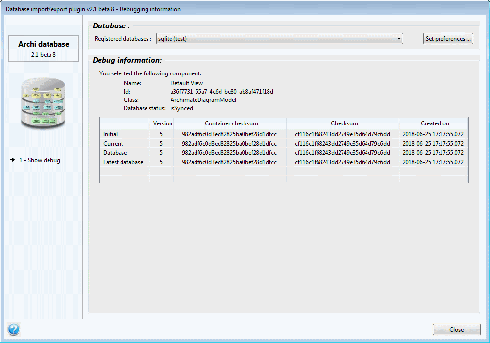

Debugging information
The plugin can show detailed information any component in the model.
This debugging information can be accessed using the context menu (right-click) of the component.

You may choose a database to compare the component to the database content.
The fields provided are:
- Name: the name of the component
- Id: the internal ID of the component
- Class: the class of the component
- Image path: the path of the embedded image (if any)
- Database status: the status of the component regarding the selected database
- isSynced: The component is sync'ed with the database. It doesn't need to be exported to the database.
- isNewInModel: The component does not exist in the database. It needs to be exported to the database.
- isUpadtedInDatabase: The component has been updated in the database by another person (either in the same model or another one). The model needs to be updated with the new values from the database.
- isUpdatedInModel: The component does exist in the database and has been updated in the model. The new values need to be exported to the database.
- isDeletedInDatabase: The component does exist in the database but the latest version of the model does not includes it anymore. It needs to be deleted from the model.
- isConflicting: The component has been updated both in the database and in the model. The conflict will have to be manually resolved during the next export process.
The array provides the following columns:
- Version: version of the component
- Container checksum: checksum of the component without its content
- Checksum: checksum of the component taking in account its content
- Created on: date when the component has been created in the database
These columns are provided for several states of the component:
- Initial: Version of the component as it was when the model has been imported from or exported to the database.
- If null, this means that the component has been created or loaded from an Archimate file.
- Else, this means that the component has been imported from the database, or already exported to the database.
- Current: Actual version of the component in the model
- Database: Version of the component as it is registered in the latest version of the model in the database
- If null, this means that the component is not part of the latest version of the model in the database
- Else, this means that the component is part of the latest version of the model in the database
- Latest database: Latest version of the component (whichever the model)
- If null, then the component does not exist in the database
- Else, the component does exist in the database.
When the selected component is a graphical object or connection, the corresponding Archimate concept is also shown.